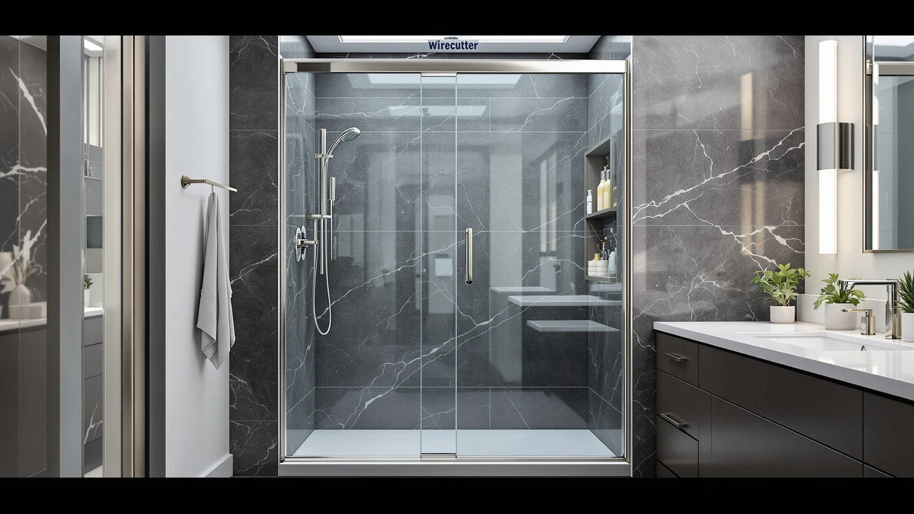

Shower Enclosure vs Tile (2026)
Prices and picks verified as of August 2026. Independent, reader-supported reviews.


Things to Know Before You Buy
- A shower enclosure typically costs $250 to $600 for the unit alone, while a fully tiled shower runs $2,000 to $10,000 or more once labor is included.
- Enclosures install in a day or two; tiled showers take a contractor anywhere from three days to two weeks depending on the pattern and waterproofing method.
- Grout lines in a tiled shower need periodic resealing, while glass and acrylic enclosures mainly need wiped-down glass and occasional hardware checks.
- Tile offers far more design flexibility in pattern, color and niche placement, while enclosures come in fixed sizes that have to match your existing stall or alcove.
- Real estate agents and remodeling surveys consistently note that a fully tiled shower adds more resale value than a prefabricated enclosure.
The shower enclosure vs tile decision shapes your bathroom's budget, timeline and resale value more than almost any other renovation call you'll make this year. A shower enclosure ships as a prefabricated glass and metal frame you bolt into place in a weekend. A tiled shower gets built tile by tile over days or weeks by a contractor, or by you if you're comfortable with a wet saw and a level. Both can look sharp in a finished bathroom, but how you get there, and what it costs to keep it looking that way, is a different story for each.
We compared pricing data, installation timelines and verified owner reviews across a range of shower enclosures and tiled shower builds. The goal is to help you figure out which one fits your bathroom, your budget and your patience for a renovation. Neither option wins outright. It depends on how long you're staying in the house, your upfront budget, and whether you're doing the work yourself or hiring it out.
Quick Answer
A shower enclosure wins on cost and installation speed, and it's the easier DIY job. Owners who want a quick bathroom refresh without hiring a contractor tend to reach for a glass corner enclosure like the ENSO SENKA or a neo-angle door kit. A tiled shower wins on design flexibility, durability and resale value. That's the better call if you're planning to keep the bathroom for a decade or more.
What is Shower Enclosure?
A shower enclosure is a self-contained shower stall built from tempered glass panels set into a metal or aluminum frame, paired with a molded acrylic or fiberglass base. Manufacturers build them in fixed footprints, most commonly 32, 34, 36 or 40 inches, in corner (neo-angle) or straight alcove configurations. You order the size that matches your bathroom opening, and the whole unit arrives as a kit: base, panels, door, hardware and a sealing gasket.
Installation is closer to assembling furniture than remodeling a room. You set the base, anchor the frame to the studs, hang the glass panels and door, then run a bead of silicone around the seams. Most owners and installers report a one-day to two-day job for a straightforward swap into an existing stall, though plumbing changes or an out-of-square opening can add time.
The tradeoff is flexibility. You're buying a fixed product, not a custom build, so the shape, glass tint and hardware finish are limited to whatever the manufacturer offers in your size. In the shower enclosure vs tile comparison, this is the category built for speed and predictability rather than customization.
What is Tile?
A tiled shower is built in place, tile by tile, over a waterproofed substrate. A contractor (or a confident DIYer) frames the stall, installs a waterproofing membrane or liquid membrane system, sets a mortar bed and drain, then applies wall and floor tile with thinset and grout. The materials range from budget ceramic to porcelain, natural stone or glass mosaic, and the layout can be as simple as a subway-tile grid or as elaborate as a herringbone pattern with a built-in niche and bench.
Because everything is custom-built, a tiled shower can fit almost any footprint, including irregular walls, curbless entries and oversized walk-in layouts that no prefabricated enclosure can match. That flexibility comes with a longer build. Waterproofing needs to cure before tile goes up, and grout needs time to set before the shower sees daily use, so most tile jobs take anywhere from three days to two weeks.
In the shower enclosure vs tile debate, tile is the category for owners who want a specific look, an unusual layout, or a shower that's built to last as long as the house.
Head-to-Head: Build Quality & Durability
Tile generally outlasts a shower enclosure when it's installed correctly. Porcelain and stone tile resist scratching, staining and heat, and a properly waterproofed substrate can last 20 years or more before it needs a rebuild. The weak point isn't the tile itself but the grout and the seal around the drain and niche, both of which need maintenance to keep water from working its way behind the wall.
A shower enclosure's glass and frame hold up well for their expected lifespan, generally 10 to 15 years, but the moving parts (door rollers, hinges, sliding tracks) wear faster than a static tile wall. Owners report that hard water buildup on hardware and glass causes more visible aging than the glass itself failing. Tempered glass panels rarely crack under normal use, and when they do, most manufacturers sell replacement panels rather than requiring a full teardown.
In the shower enclosure vs tile durability comparison, tile wins on raw material lifespan, while a shower enclosure wins on simplicity of repair since a damaged panel or door swaps out without disturbing the surrounding wall.
Head-to-Head: Price & Value
Price is where the shower enclosure vs tile decision gets easiest to call. A shower enclosure like the ENSO SENKA or a Noirpierre neo-angle door runs $270 to $430 for the unit, and a professional install typically adds $200 to $500 in labor if you don't do it yourself. A tiled shower starts around $2,000 for a basic ceramic tile job in a standard alcove and climbs past $10,000 for natural stone, custom patterns or a large walk-in layout once you add labor, waterproofing materials and a glass door or partition.
Value depends on your time horizon. If you're renovating a rental unit, staging a house for a quick sale, or replacing a cracked stall on a tight budget, a shower enclosure delivers most of the visual upgrade for a fraction of the cost. If you're building a forever bathroom, the higher upfront cost of tile spreads out over decades of use and typically returns more of its cost at resale.
Head-to-Head: Use Experience
Day to day, a shower enclosure is easier to keep looking clean. Glass wipes dry after each use, and there's no grout to stain or mildew to scrub out of tile grooves. Reviewers consistently note that hard water spots are the main enemy, and a quick squeegee habit keeps the glass clear far longer than periodic deep cleaning does. The seams around the base and frame are the spots that need occasional resilicone work to stay watertight.
A tiled shower feels more solid underfoot and gives you more room to add a bench, a recessed niche for shampoo, or a rain showerhead without redesigning a prefabricated unit. The tradeoff is maintenance: grout is porous, so it needs sealing every one to two years to resist mold and staining, and dark grout lines show water spots faster than a glass panel does. Owners who choose large-format tile with minimal grout lines report noticeably less upkeep than those with small mosaic tile.
Neither option changes the water pressure or fixtures you use, since both are surrounds built around your existing plumbing. The difference in the shower enclosure vs tile experience comes down to cleaning routine: wipe glass versus reseal grout.
When to Choose Shower Enclosure
Pick a shower enclosure when your existing stall or alcove is a standard size, your timeline is measured in days rather than weeks, and you'd rather spend your renovation budget elsewhere in the house. It's the practical choice for a rental property, a fix before selling, or a straightforward swap of an old sliding door or leaking pan.
It also makes sense if you're comfortable doing the install yourself. Most enclosures come with clear instructions and standard hardware, so a handy homeowner can complete the swap in a weekend without hiring a contractor or coordinating a multi-day waterproofing schedule. Confirm the unit's exact footprint against your opening before you order, since returns on glass panels are costly and slow.
When to Choose Tile
Choose tile when your bathroom layout is irregular, you want a curbless or walk-in shower, or you're planning to stay in the house long enough for the higher upfront cost to pay off. Tile is also the better call if you want a specific design, whether that's a large-format porcelain look, natural stone, or a custom niche and bench built into the wall.
It's worth the extra cost and time if you're doing a full bathroom renovation anyway, since the contractor and materials are already on site for the rest of the job. If you value resale value and a shower that feels like a permanent part of the house rather than an installed fixture, tile is the stronger long-term investment.
Our Top Picks
If you've decided a shower enclosure is the better fit for your bathroom, these are the units we'd start with, based on pricing, glass quality and verified owner reviews.

Editor's Pick
ENSO SENKA Corner Shower Enclosure
A well-rounded corner enclosure for a standard alcove swap, with a straightforward one-day install.
$369.00
Check Price on Amazon
Best Value
34 Neo-Angle Shower Door 34"
The lowest-priced neo-angle door in this lineup, without cutting hardware quality.
$319.99
Check Price on Amazon
Premium Choice
ENSO SENKA Corner Shower Enclosure
Heavier glass and a reinforced frame for owners who want the sturdiest option in the ENSO SENKA line.
$379.00
Check Price on AmazonFrequently Asked Questions
Final Verdict
The shower enclosure vs tile choice comes down to timeline and budget more than which option looks better. If you want a fast, affordable swap that a weekend and a caulk gun can handle, an ENSO SENKA corner enclosure or a similar neo-angle kit gets you there without a contractor. If you're planning a bathroom you'll keep for the long haul and want maximum design freedom and resale value, tile is worth the extra cost and time.